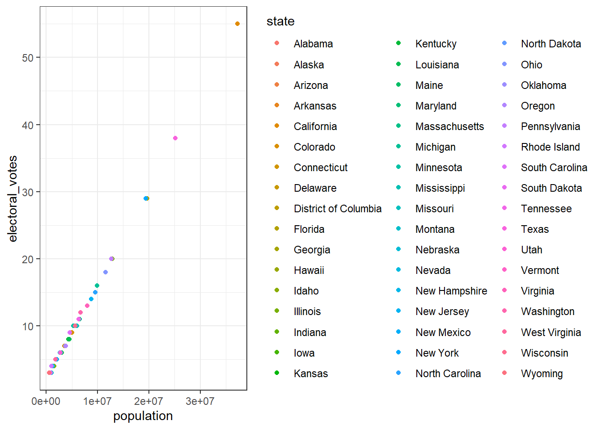
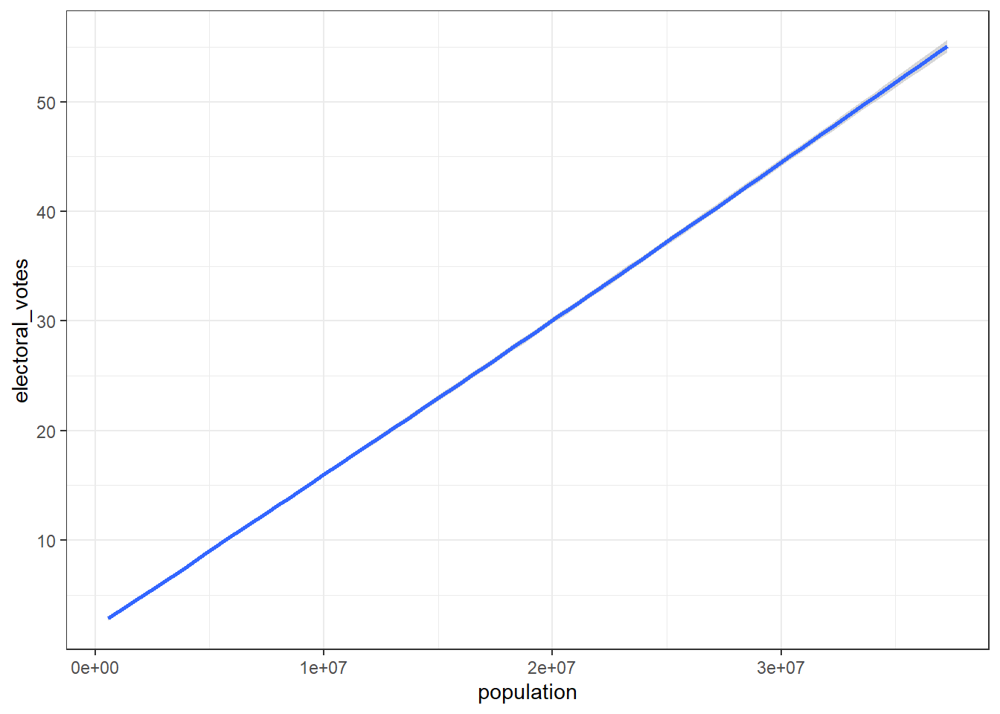
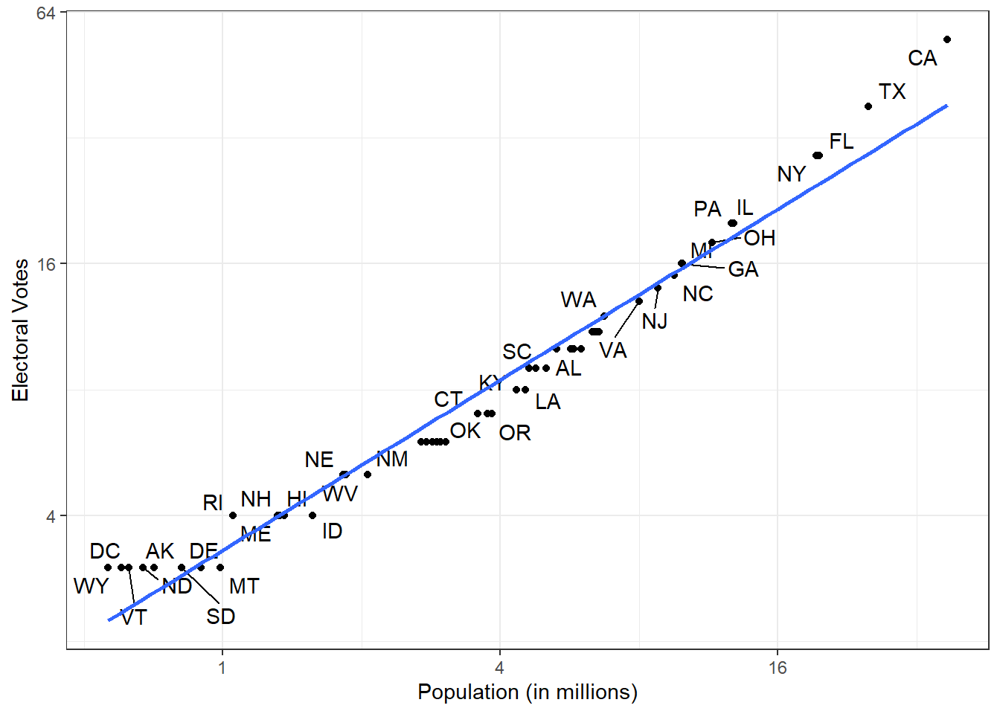

#install.packages("ggrepel", dependencies = TRUE)
library(tidyverse)
library(ggrepel)
library(dslabs)
ds_theme_set()Combining Tables
The information we need for a given analysis may not be in just one table. Here we use a simple example to illustrate the general challenge of combining tables. Suppose we want to explore the relationship between population size for US states, which we have in this table using the murders dataset from the dslabs package:
data(murders)
head(murders) state abb region population total
1 Alabama AL South 4779736 135
2 Alaska AK West 710231 19
3 Arizona AZ West 6392017 232
4 Arkansas AR South 2915918 93
5 California CA West 37253956 1257
6 Colorado CO West 5029196 65and electoral votes (also from the dslabs package), which we have in this one:
data(polls_us_election_2016)
head(results_us_election_2016) state electoral_votes clinton trump others
1 California 55 61.7 31.6 6.7
2 Texas 38 43.2 52.2 4.5
3 Florida 29 47.8 49.0 3.2
4 New York 29 59.0 36.5 4.5
5 Illinois 20 55.8 38.8 5.4
6 Pennsylvania 20 47.9 48.6 3.6Notice that just joining these two tables together will not work since the order of the states is not quite the same:
The join functions, described below, are designed to handle this challenge.
Joins
The join functions in the dplyr package, which are based on SQL joins, make sure that the tables are combined so that matching rows are together.
A left join in R is a merge operation between two data frames where the merge returns all of the rows from one table (the left side) and any matching rows from the second table. A left join in R will NOT return values of the second table which do not already exist in the first table.
The general idea is that one needs to identify one or more columns that will serve to match the two tables. Then a new table with the combined information is returned. Note what happens if we join the two tables above by state using left_join:
tab <- left_join(murders, results_us_election_2016, by = "state")
tab %>% select(state, population, electoral_votes) %>% head() state population electoral_votes
1 Alabama 4779736 9
2 Alaska 710231 3
3 Arizona 6392017 11
4 Arkansas 2915918 6
5 California 37253956 55
6 Colorado 5029196 9The data has been successfully joined and we can now, for example, make a plot to explore the relationship between population and electoral votes:
# code I did
tab %>% ggplot(aes(population,electoral_votes,color=state)) + geom_point()
ggplot(data=tab) + geom_smooth(mapping = aes(x=population, y=electoral_votes))
# code by professor
tab %>% ggplot(aes(population/10^6,electoral_votes,label=abb)) + geom_point() + geom_text_repel() +
scale_x_continuous(trans = "log2") +
scale_y_continuous(trans = "log2") +
geom_smooth(method = "lm", se = FALSE) +
xlab("Population (in millions)") +
ylab("Electoral Votes")
We see the relationship is close to linear with about 2 electoral votes for every million persons, but with smaller states getting a higher ratio. In practice, it is not always the case that each row in one table has a matching row in the other. For this reason we have several different ways to join. To illustrate this challenge, take subsets of the matrices above:
tab1 <- slice(murders, 1:6) %>%
select(state, population)
tab1 state population
1 Alabama 4779736
2 Alaska 710231
3 Arizona 6392017
4 Arkansas 2915918
5 California 37253956
6 Colorado 5029196so that we no longer have the same states in the two tables:
tab2 <- slice(results_us_election_2016, c(1:3), 5, 14,44) %>%
select(state, electoral_votes)
tab2 state electoral_votes
1 California 55
2 Texas 38
3 Florida 29
4 Illinois 20
5 Arizona 11
6 Alaska 3We will use these two tables as examples.
Left join
Suppose we want a table like tab1 but adding electoral votes to whatever states we have available. For this we use left join with tab1 as the first argument.
left_join(tab1,tab2) state population electoral_votes
1 Alabama 4779736 NA
2 Alaska 710231 3
3 Arizona 6392017 11
4 Arkansas 2915918 NA
5 California 37253956 55
6 Colorado 5029196 NANote that NAs are added to the three states not appearing in tab2. Also note that this function, as well as all the other joins, can receive the first arguments through the pipe:
tab1 %>% left_join(tab2) state population electoral_votes
1 Alabama 4779736 NA
2 Alaska 710231 3
3 Arizona 6392017 11
4 Arkansas 2915918 NA
5 California 37253956 55
6 Colorado 5029196 NARight join
If instead of a table like tab1 we want one like tab2 we can use right_join:
tab1 %>% right_join(tab2) state population electoral_votes
1 Alaska 710231 3
2 Arizona 6392017 11
3 California 37253956 55
4 Texas NA 38
5 Florida NA 29
6 Illinois NA 20Notice that now the NAs are in the column coming from tab1.
Inner join
If we want to keep only the rows that have information in both tables we use inner join. You can think of this an intersection:
inner_join(tab1,tab2) #AK, AZ, CA state population electoral_votes
1 Alaska 710231 3
2 Arizona 6392017 11
3 California 37253956 55Full join
And if we want to keep all the rows, and fill the missing parts with NAs, we can use a full join. You can think of this as a union:
full_join(tab1,tab2) state population electoral_votes
1 Alabama 4779736 NA
2 Alaska 710231 3
3 Arizona 6392017 11
4 Arkansas 2915918 NA
5 California 37253956 55
6 Colorado 5029196 NA
7 Texas NA 38
8 Florida NA 29
9 Illinois NA 20Semi join
The semi_join let’s us keep the part of the first table for which we have information in the second. It does not add the columns of the second:
semi_join(tab1, tab2) state population
1 Alaska 710231
2 Arizona 6392017
3 California 37253956Anti join
The function anti_join is the opposite of semi_join. It keeps the elements of the first table for which there is no information in the second:
anti_join(tab1, tab2) state population
1 Alabama 4779736
2 Arkansas 2915918
3 Colorado 5029196Binding (Varies for both Base R and Tidyverse)
Although we have yet to use it in this course, another common way in which datasets are combined is by binding them. Unlike the join function, the binding functions do no try to match by a variable but rather just combine datasets. If the datasets don’t match by the appropriate dimensions one obtains an error.
Columns
The dplyr function bind_cols binds two objects by making them columns in a tibble. For example, if we quickly want to make a data frame consisting of numbers we can use.
bind_cols(a = 1:3, b = 4:6)# A tibble: 3 × 2
a b
<int> <int>
1 1 4
2 2 5
3 3 6This function requires that we assign names to the columns. Here we chose a and b. Note there is an R-base function cbind that performs the same function but creates objects other than tibbles.
bind_cols can also bind data frames. For example, here we break up the tab data frame and then bind them back together:
tab1 <- tab[,1:3]
tab2 <- tab[,4:6]
tab3 <- tab[,7:9]
new_tab <- bind_cols(tab1,tab2,tab3)
head(new_tab) state abb region population total electoral_votes clinton trump others
1 Alabama AL South 4779736 135 9 34.4 62.1 3.6
2 Alaska AK West 710231 19 3 36.6 51.3 12.2
3 Arizona AZ West 6392017 232 11 45.1 48.7 6.2
4 Arkansas AR South 2915918 93 6 33.7 60.6 5.8
5 California CA West 37253956 1257 55 61.7 31.6 6.7
6 Colorado CO West 5029196 65 9 48.2 43.3 8.6Rows
The bind_rows is similar but binds rows instead of columns.
tab1 <- tab[1:2,]
tab2 <- tab[3:4,]
bind_rows(tab1,tab2) state abb region population total electoral_votes clinton trump others
1 Alabama AL South 4779736 135 9 34.4 62.1 3.6
2 Alaska AK West 710231 19 3 36.6 51.3 12.2
3 Arizona AZ West 6392017 232 11 45.1 48.7 6.2
4 Arkansas AR South 2915918 93 6 33.7 60.6 5.8This is based on an R-base function rbind.
Set Operators (unions, intersections of sets)
Another set of commands useful for combing are the set operators. When applied to vectors, these behave as their names suggest. However, if the tidyverse, or more specifically, dplyr is loaded, these functions can be used on data frames as opposed to just on vectors.
Intersect
You can take intersections of vectors:
intersect(1:10,6:15)[1] 6 7 8 9 10intersect(c("a","b","c"),c("b","c","d"))[1] "b" "c"But with dplyr loaded we can also do this for tables having the same column names:
tab1 <- tab[1:5,]
tab2 <- tab[3:7,]
intersect(tab1,tab2) state abb region population total electoral_votes clinton trump others
1 Arizona AZ West 6392017 232 11 45.1 48.7 6.2
2 Arkansas AR South 2915918 93 6 33.7 60.6 5.8
3 California CA West 37253956 1257 55 61.7 31.6 6.7Union
Similarly union takes the union:
union(1:10,6:15) [1] 1 2 3 4 5 6 7 8 9 10 11 12 13 14 15union(c("a","b","c"),c("b","c","d"))[1] "a" "b" "c" "d"But with dplyr loaded we can also do this for tables having the same column names:
tab1 <- tab[1:5,]
tab2 <- tab[3:7,]
union(tab1,tab2) state abb region population total electoral_votes clinton trump
1 Alabama AL South 4779736 135 9 34.4 62.1
2 Alaska AK West 710231 19 3 36.6 51.3
3 Arizona AZ West 6392017 232 11 45.1 48.7
4 Arkansas AR South 2915918 93 6 33.7 60.6
5 California CA West 37253956 1257 55 61.7 31.6
6 Colorado CO West 5029196 65 9 48.2 43.3
7 Connecticut CT Northeast 3574097 97 7 54.6 40.9
others
1 3.6
2 12.2
3 6.2
4 5.8
5 6.7
6 8.6
7 4.5Set differrence
The set difference between a first and second argument can be obtained with setdiff. Not unlike instersect and union, this function is not symmetric:
setdiff(1:10,6:15)[1] 1 2 3 4 5setdiff(6:15,1:10)[1] 11 12 13 14 15As with the others above, we can apply it to data frames:
tab1 <- tab[1:5,]
tab2 <- tab[3:7,]
setdiff(tab1,tab2) state abb region population total electoral_votes clinton trump others
1 Alabama AL South 4779736 135 9 34.4 62.1 3.6
2 Alaska AK West 710231 19 3 36.6 51.3 12.2setequal
Finally, the function set_equal tells us if two sets are the same, regardless of order. So
setequal(1:5,1:6)[1] FALSEbut
setequal(1:5,5:1)[1] TRUEsetequal(c("a","e","g","h"),c("h","g","e","a"))[1] TRUEsetequal(c("a","e","g","h"),c("h","g","e","a","h"))[1] TRUEIt also works when applied to data frames that are not equal regardless of order:
setequal(tab1,tab2)[1] FALSE